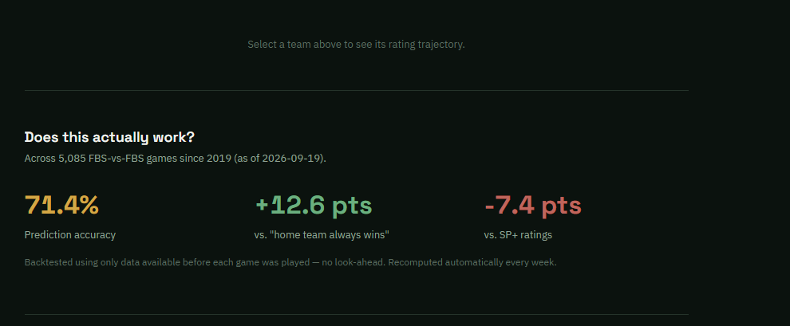

Data & Analytics Projects
A selection of academic, professional, and personal projects spanning R, Python, and Tableau. Click any card to view the code, dashboard, or full write-up.
CFB Power Ratings
- Built a pipeline pulling multi-season game, roster, recruiting-talent, and SP+ data from the CollegeFootballData API into a documented Elo-style rating engine — an objective alternative to human-voted polls.
- Backtested against every FBS-vs-FBS game since 2019 with no look-ahead: 71.4% accuracy, beating a home-favorite baseline by 12.6 points.
- Automated the full pipeline with a scheduled GitHub Action that pulls new results and recomputes rankings every week.
- Designed a live, dependency-free dashboard (vanilla JS + Chart.js) showing current rankings and each team's rating trajectory.

Titanic Survival Prediction
- Built an end-to-end classification pipeline predicting Titanic passenger survival, including feature engineering (Title extraction, Family Size, Cabin_Assigned flag) and VIF-based multicollinearity checks.
- Trained and compared six models — Logistic Regression, Random Forest, XGBoost, Gradient Boosting, SVM, and KNN — using stratified 5-fold cross-validation.
- Tuned Random Forest, XGBoost, and Gradient Boosting via
GridSearchCV; evaluated all models with ROC/AUC analysis. - Selected tuned Random Forest as the final model — 83.7% validation accuracy, 0.890 AUC — and generated the Kaggle submission file.

MLB ROTO Score Prediction
- Built a full machine learning pipeline to predict MLB player ROTO scores using the bat2022 dataset.
- Performed exploratory data analysis, applied MLB batting qualification rules, explored positional performance patterns, and developed predictive models using Linear Regression and Ridge Regression.
- Achieved an impressive R-squared of 0.987, validated through cross-validation.

Predicting 2022 MLB ROTO Value
- Modeled fantasy baseball (ROTO) value for hitters using 2022 MLB data and performance metrics such as SLG, AB, HR, H, BB, and SB.
- Fit multiple linear regression models in R and compared goodness-of-fit using AIC, adjusted R², and residual diagnostics.
- Explored interactions and multicollinearity, applying model selection techniques to find a parsimonious specification.
- Built Tableau visualizations (scatterplots, residual plots, and player comparison views) to communicate model insights.

Chocolate Bar Ratings: ANOVA & Effect of Cocoa %
- Analyzed the "Flavors of Cacao" dataset to understand how company location and cocoa percentage impact expert ratings.
- Used factorial ANOVA with Type II sums of squares to handle unbalanced data and interpret main effects and interactions.
- Performed model diagnostics (residual plots, normality checks, variance homogeneity) and applied transformations where needed.
- Summarized results in publication-style tables and plots using
ggplot2and reported practical implications for chocolate makers.

CalEnviroScreen 4.0: Environmental & SocioEconomic Burden Analysis
- Analyzed 8,035 census tracts across California using CalEnviroScreen 4.0 environmental and demographic indicators.
- Investigated regional disparities by comparing average Pollution Burden Scores between Northern vs. Southern California using a two-sample t-test.
- Identified statistically significant differences in pollution burden (p-value ≈ 1.92 × 10⁻²⁰¹) and created a county-level choropleth map to visualize geographic patterns.
- Examined socioeconomic impacts by modeling the relationship between unemployment rate and pollution burden using simple linear regression.

World Happiness Index: Regression & Random Forest Modeling
- Analyzed the World Happiness Index & Inflation dataset (1,232 observations → 576 usable after cleaning), containing economic, demographic, and social indicators for 148 countries (2015–2023).
- Explored global patterns using visualizations including histograms, scatterplots, and a full pairwise correlation matrix.
- Built a Random Forest model achieving R² = 0.8117, outperforming linear regression and highlighting non-linear relationships between predictors and happiness.
- Synthesized insights showing that economic strength and social well-being jointly drive national happiness levels, while high inflation and corruption negatively impact scores.